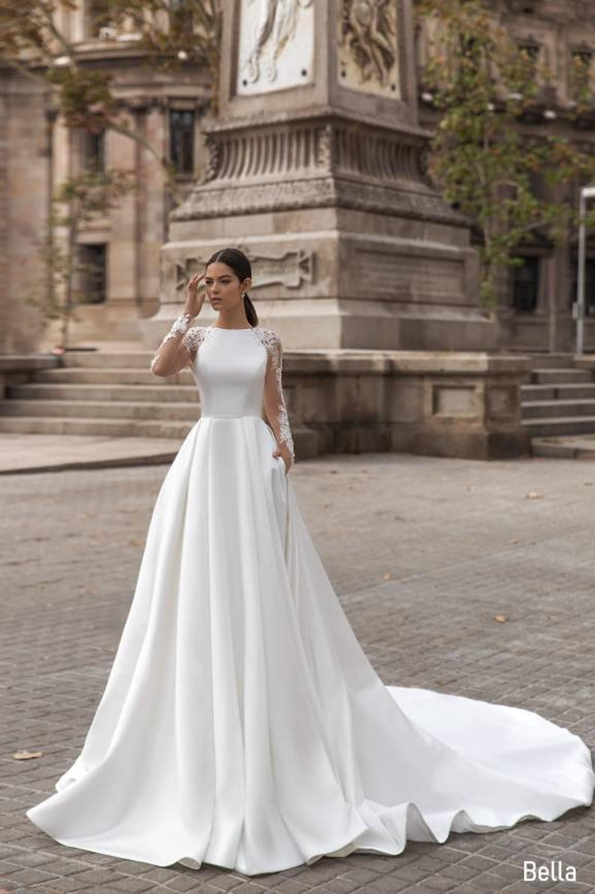
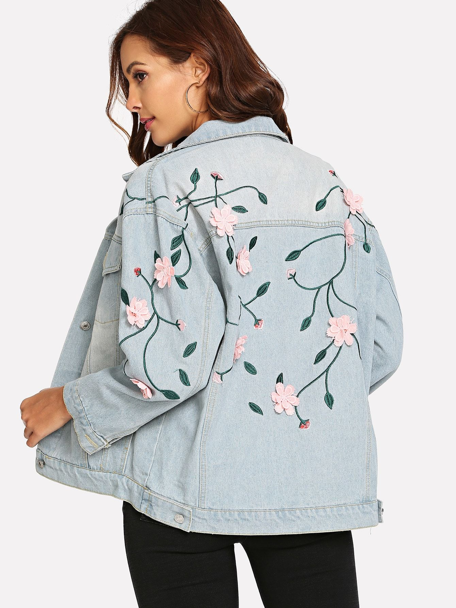
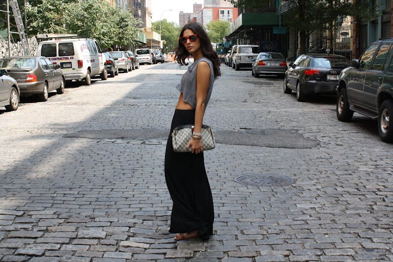

Spring is here, and it's time to swap out the heavy layers for breezy fabrics, pastel tones, and light textures. Whether you're heading to brunch with friends, a casual workday, or a garden party, these 5 looks will have you stepping out in style—effortlessly.
1. The Classic White Dress
Why it works: A white dress is timeless. It flatters every skin tone and gives off the perfect “I woke up like this” vibe.
Style Tip: Pair it with nude sandals and a woven handbag. Add gold accessories for that chic minimalist feel.
2. Denim & Florals
Why it works: The contrast between rugged denim and soft floral prints creates a beautiful balance.
Style Tip: Opt for a floral blouse tucked into high-waisted jeans. Finish the look with espadrilles or ankle boots.
3. Pastel Power Suit
Why it works: Structured yet playful, pastel suits are perfect for both work and weekend wear.
Style Tip: Go for a monochrome pastel set with white sneakers for a fresh, polished look.

4. Maxi Skirts & Crop Tops
Why it works: Flowy skirts and fitted tops are flattering and breathable for warmer days.
Style Tip: Add a wide-brim hat and layered necklaces to elevate the look.
5. Linen Jumpsuits
Why it works: Linen keeps you cool and gives an effortlessly elegant look.
Style Tip: Choose earth tones and style with leather sandals and a crossbody bag.

Fashion should be fun, easy, and make you feel amazing. These five spring outfit ideas are versatile, stylish, and perfect for making a statement this season. Don’t forget to add your personality to each look — that’s what truly brings it to life.